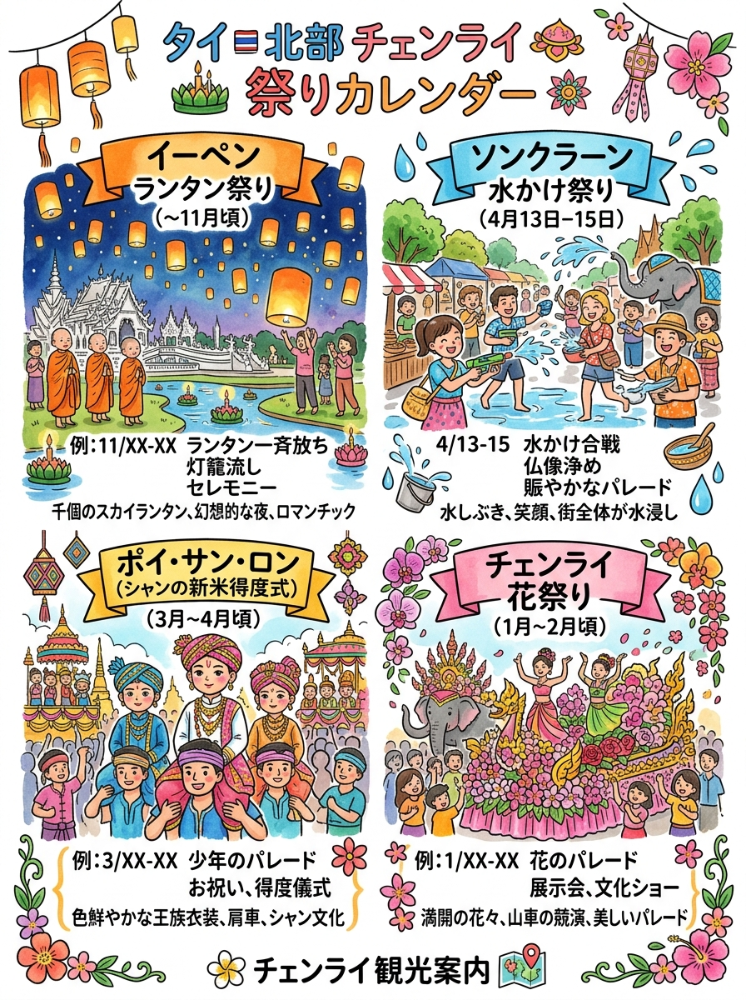
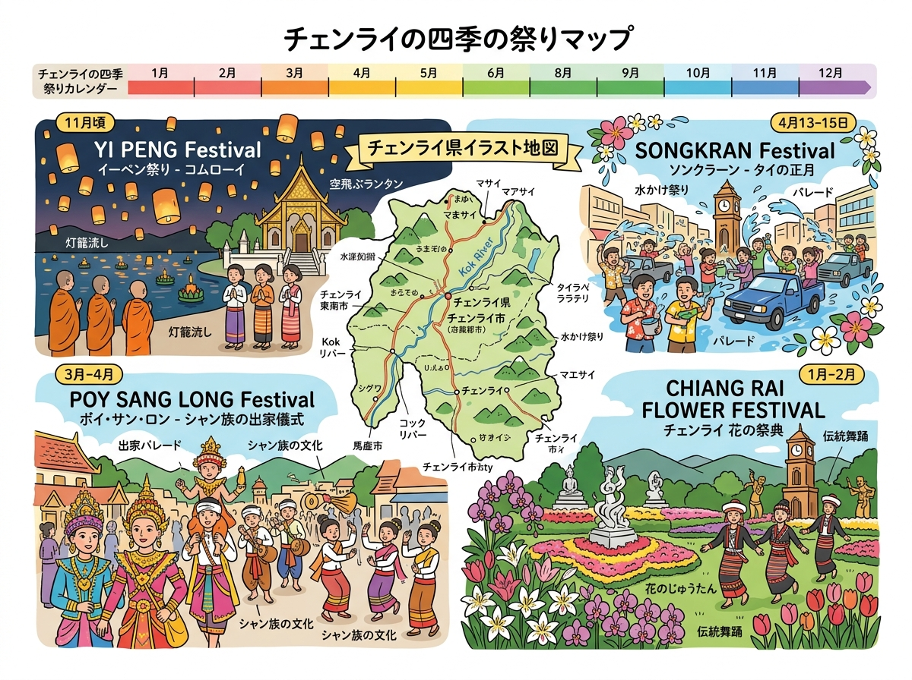

01
イーペン祭り / コムローイ放ち（ประเพณียี่เป็ง）
天界の仏塔（プラケートケーウ・チュラーマニー）へ灯明を捧げる天灯（コムローイ）放ち。無数の土皿灯明（パーン・プラティープ）点灯、大説法（テート・マハーチャート）聴聞。
💡 見学マナー
【航空法・県令による厳格規制】空港周辺や市街地での無許可放上げは違法（指定特設会場・指定時間枠のみ許可）。ドローン無許可飛行禁止。寺院境内での露出服NG。
コムローイを上げるイーペン祭りや、メーホンソーンの出家式（ポイ・サーンロン）等の開催時期。
クリックすると拡大して詳細を確認・印刷できます。

旅行者の持ち歩き・印刷に適した手書き風インフォグラフィック。

位置関係やルート、全体像を俯瞰できるワイドデザイン。
現地調査および公的データに基づく最新詳細情報。
天界の仏塔（プラケートケーウ・チュラーマニー）へ灯明を捧げる天灯（コムローイ）放ち。無数の土皿灯明（パーン・プラティープ）点灯、大説法（テート・マハーチャート）聴聞。
【航空法・県令による厳格規制】空港周辺や市街地での無許可放上げは違法（指定特設会場・指定時間枠のみ許可）。ドローン無許可飛行禁止。寺院境内での露出服NG。
旧年の穢れを祓う洗髪（ワン・サンカーンローン）、寺院での潅仏（ソーンナムプラ）・砂仏塔作り・菩提樹支え木奉納、長老へ聖水を捧げ許しと祝福を乞うダムフア儀礼。
僧侶・妊婦・運転中への水掛け禁止。氷水・汚水・高圧パイプ銃禁止。寺院境内での過激な水掛けや飲酒・喫煙は厳禁（アルコール規制法違反）。伝統衣装着用推奨。
シャン族の男児（7〜14歳）が見習い僧として出家する儀式。出家前の王子（シッダールタ）を模し豪華絢爛な衣装・冠・化粧で着飾り、地面に足を着けず肩車で練り歩く。
サーンロンへの直接接触厳禁（特に女性の接触は禁忌）。本堂内での剃髪・受戒時の至近距離フラッシュ撮影や三脚占拠禁止。祭礼区域内での禁酒ルール遵守。
竹籠（クワイ）に新米や食料を詰め、先祖の名前を書いた籤（サラーク）を添えて寺院に持参。僧侶が無作為に籤を引いて読経供養する無執着・平等の大布施。巨大な極彩色供養塔奉納。
僧侶が先祖の名前を読み上げて聖水を注ぐ回向中は静粛を保ち横切らないこと。繊細な竹紙細工のサラークヨーム供養塔を引っ張ったり寄りかかったりしないこと。
インドラ神から授かったとされる都市の礎柱（サオ・インタキーン）を祀る最大級の都市祭礼。32箇所の供養鉢に花・線香・蝋燭を献花（サイ・カンドーク）し、降雨と都市平安を祈願。
【サオ・インタキーン祠堂内は女性立入禁止（厳格な宗教的結界）】。祠堂の外側からの献花は可能。境内での肩や膝の露出禁止（サロン着用必須）。仏像パレード時のマナー遵守。